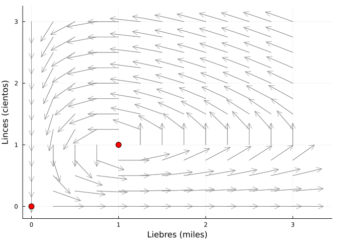
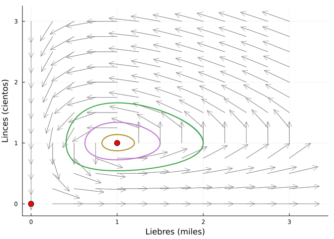
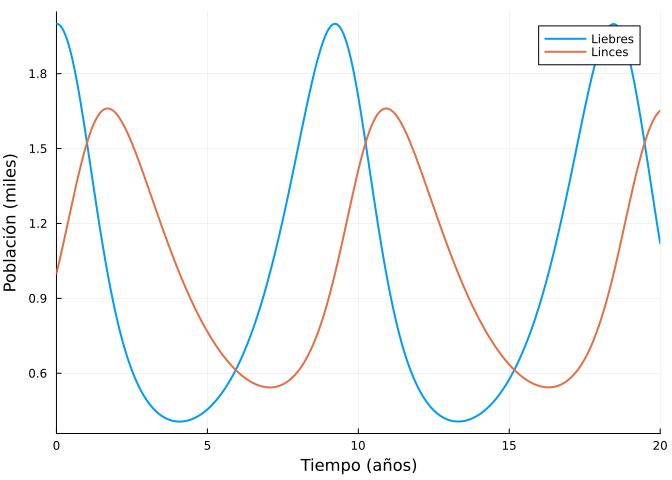
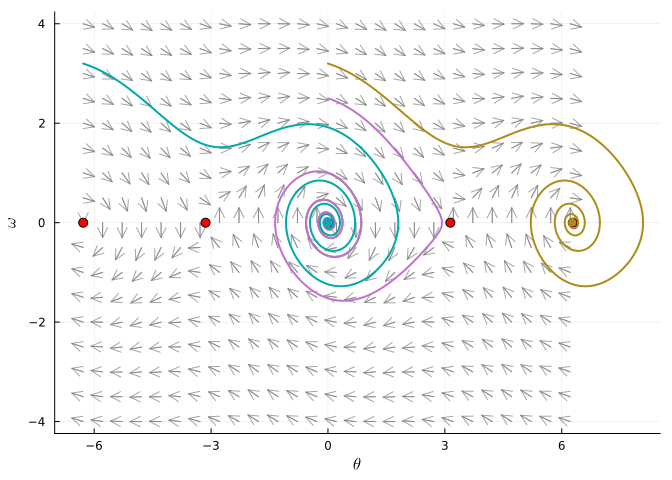
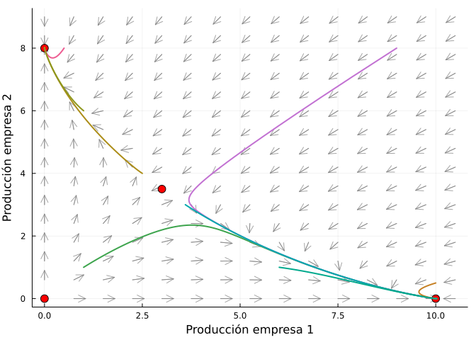
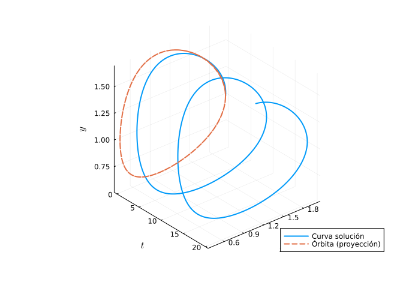

2 Geometría de un sistema de ecuaciones diferenciales de primer orden
Un sistema autónomo de dos ecuaciones diferenciales de primer orden
\[ \begin{cases} x' = f(x, y) \\ y' = g(x, y) \end{cases} \]
define un campo vectorial \(F(x,y) = (f(x,y), g(x,y))\) en el plano. El plano \((x,y)\) se denomina espacio de fases, las soluciones \((x(t), y(t))\) dibujan en él las curvas solución u órbitas, y el conjunto de órbitas representativas junto con los puntos de equilibrio (donde \(F=0\)) constituye el diagrama de fases del sistema.
2.1 Ejercicios resueltos
Para la realización de esta práctica se requieren los siguientes paquetes:
using SymPyPythonCall # Cálculo simbólico.
using Plots # Dibujo de gráficas.
using DifferentialEquations # Resolución numérica de sistemas.
using LaTeXStrings # Código LaTeX en los gráficos.
using NLsolve # Puntos de equilibrio numéricos.
NotaVersiones de Julia y de los paquetes utilizados
Status `~/.julia/environments/v1.12/Project.toml` [0c46a032] DifferentialEquations v8.0.2 [b964fa9f] LaTeXStrings v1.4.0 [91a5bcdd] Plots v1.41.6 [bc8888f7] SymPyPythonCall v0.5.1
A lo largo de la esta práctica usaremos la siguiente función auxiliar para dibujar campos vectoriales normalizados.
function campo_vectorial(f, g, xs, ys; escala = 0.35, kwargs...)
X = [x for y in ys for x in xs]
Y = [y for y in ys for x in xs]
U = f.(X, Y)
V = g.(X, Y)
N = sqrt.(U .^ 2 .+ V .^ 2) .+ 1e-12
quiver(X, Y, quiver = (escala * U ./ N, escala * V ./ N),
color = :gray, alpha = 0.7; kwargs...)
end;Ejercicio 2.1 Campo vectorial de un sistema depredador–presa. En una reserva conviven liebres (\(x\), en miles) y linces (\(y\), en cientos), según el sistema de Lotka–Volterra
\[ \begin{cases} x' = x\,(1 - y) \\ y' = 0.5\,y\,(x - 1) \end{cases} \]
Calcular simbólicamente los puntos de equilibrio del sistema.
NotaAyudaLos puntos de equilibrio son las soluciones del sistema algebraico \(f(x,y)=0\), \(g(x,y)=0\). Usar
solvedeSymPycon una lista de ecuaciones.TipSoluciónusing SymPyPythonCall @syms x y solve([x * (1 - y), Sym(1)/2 * y * (x - 1)], [x, y])2-element Vector{Tuple{Sym{PythonCall.Py}, Sym{PythonCall.Py}}}: (0, 0) (1, 1)Hay dos equilibrios: \((0,0)\) (extinción de ambas especies) y \((1,1)\) (coexistencia con mil liebres y cien linces).
Dibujar el campo vectorial en \([0, 3]\times[0, 3]\) marcando los puntos de equilibrio. Interpretar el sentido de giro del campo.
TipSoluciónusing Plots f(x, y) = x * (1 - y) g(x, y) = 0.5 * y * (x - 1) plt = campo_vectorial(f, g, 0:0.25:3, 0:0.25:3, xlab = "Liebres (miles)", ylab = "Linces (cientos)", legend = false) scatter!(plt, [0, 1], [0, 1], color = :red, ms = 6) plt
Alrededor de \((1,1)\) el campo gira en sentido antihorario: cuando hay muchas liebres los linces crecen, cuando hay muchos linces las liebres decrecen, etc. Es el ciclo clásico depredador–presa.
Superponer al campo las curvas solución con condiciones iniciales \((2, 1)\), \((1.5, 1)\) y \((1.2, 1)\) y dibujar también las series temporales \(x(t)\), \(y(t)\) para la primera de ellas.
NotaAyudaResolver el sistema con
ODEProblempasando la funcióndu = F(u, p, t)en forma vectorial, y dibujar la órbita conplot(sol, idxs = (1, 2)).TipSoluciónusing DifferentialEquations function lotka!(du, u, p, t) du[1] = u[1] * (1 - u[2]) du[2] = 0.5 * u[2] * (u[1] - 1) end for u0 in [[2.0, 1.0], [1.5, 1.0], [1.2, 1.0]] sol = solve(ODEProblem(lotka!, u0, (0.0, 20.0))) plot!(plt, sol, idxs = (1, 2), lw = 2) end plt
sol = solve(ODEProblem(lotka!, [2.0, 1.0], (0.0, 20.0))) plot(sol, lw = 2, label = ["Liebres" "Linces"], xlab = "Tiempo (años)", ylab = "Población (miles)", legend = :topright)
Las órbitas son curvas cerradas alrededor de \((1,1)\). Las poblaciones oscilan periódicamente, con los máximos de linces retrasados respecto a los de liebres.
Ejercicio 2.2 Espacio de fases del péndulo amortiguado. Las oscilaciones de un péndulo con rozamiento se describen mediante el sistema
\[ \begin{cases} \theta' = \omega \\ \omega' = -\sin\theta - 0.25\,\omega \end{cases} \]
donde \(\theta\) es el ángulo con la vertical y \(\omega\) la velocidad angular.
Calcular los puntos de equilibrio en \([-2\pi, 2\pi]\times\mathbb{R}\) e interpretarlos físicamente.
TipSoluciónusing SymPyPythonCall @syms θ ω solve([ω, -sin(θ) - Sym(1)/4 * ω], [θ, ω])2-element Vector{Tuple{Sym{PythonCall.Py}, Sym{PythonCall.Py}}}: (0, 0) (pi, 0)SymPydevuelve \((0,0)\) y \((\pi, 0)\); por periodicidad, los equilibrios son \((k\pi, 0)\), \(k\in\mathbb{Z}\). Los de \(k\) par corresponden al péndulo colgando en reposo (estables) y los de \(k\) impar al péndulo invertido (inestables).Dibujar el diagrama de fases en \([-2\pi, 2\pi]\times[-4, 4]\) con órbitas que partan de \((\theta_0, \omega_0) = (0, 1), (0, 2.5), (0, 3.2), (-2\pi, 3.2)\). Interpretar los distintos tipos de órbitas.
TipSoluciónusing Plots, DifferentialEquations, LaTeXStrings f(θ, ω) = ω g(θ, ω) = -sin(θ) - 0.25ω plt = campo_vectorial(f, g, -2π:0.5:2π, -4:0.5:4, escala = 0.3, xlab = L"\theta", ylab = L"\omega", legend = false) scatter!(plt, [-2π, -π, 0, π, 2π], zeros(5), color = :red, ms = 5) function pendulo!(du, u, p, t) du[1] = u[2] du[2] = -sin(u[1]) - 0.25u[2] end for u0 in [[0.0, 1.0], [0.0, 2.5], [0.0, 3.2], [-2π, 3.2]] sol = solve(ODEProblem(pendulo!, u0, (0.0, 40.0))) plot!(plt, sol, idxs = (1, 2), lw = 2) end plt
Con poca energía inicial (\(\omega_0=1, 2.5\)), el péndulo oscila y cae en espiral hacia el equilibrio \((0,0)\). Con más energía (\(\omega_0=3.2\)), da una o varias vueltas completas (\(\theta\) avanza \(2\pi\)) antes de quedar atrapado en el pozo de otro equilibrio estable: el rozamiento disipa energía y todas las órbitas terminan en algún \((2k\pi, 0)\).
Ejercicio 2.3 Puntos de equilibrio numéricos: dos empresas en competencia. Las cuotas de producción \(x, y \ge 0\) de dos empresas que compiten por el mismo mercado evolucionan según
\[ \begin{cases} x' = x\,(10 - x - 2y) \\ y' = y\,(8 - y - 1.5x) \end{cases} \]
Calcular todos los puntos de equilibrio, simbólica y numéricamente.
NotaAyudaSimbólicamente con
solvedeSymPy; numéricamente connlsolvedel paqueteNLsolvepartiendo de puntos iniciales próximos a cada equilibrio.TipSoluciónusing SymPyPythonCall @syms x y eqs = solve([x * (10 - x - 2y), y * (8 - y - Sym(3)/2 * x)], [x, y])4-element Vector{Tuple{Sym{PythonCall.Py}, Sym{PythonCall.Py}}}: (0, 0) (0, 8) (3, 7/2) (10, 0)Hay cuatro equilibrios: \((0,0)\), \((10, 0)\), \((0, 8)\) y el de coexistencia \((3, 3.5)\). Numéricamente:
using NLsolve F(u) = [u[1] * (10 - u[1] - 2u[2]), u[2] * (8 - u[2] - 1.5u[1])] nlsolve(F, [3.0, 3.0]).zero2-element Vector{Float64}: 3.0000000000000018 3.4999999999999996Dibujar el diagrama de fases en \([0,11]\times[0,9]\) con varias órbitas y decidir gráficamente si el equilibrio de coexistencia es estable, es decir, si ambas empresas pueden sobrevivir en el mercado.
TipSoluciónusing Plots, DifferentialEquations f(x, y) = x * (10 - x - 2y) g(x, y) = y * (8 - y - 1.5x) plt = campo_vectorial(f, g, 0:0.75:11, 0:0.6:9, escala = 0.3, xlab = "Producción empresa 1", ylab = "Producción empresa 2", legend = false) scatter!(plt, [0, 10, 0, 3], [0, 0, 8, 3.5], color = :red, ms = 6) function comp!(du, u, p, t) du[1] = u[1] * (10 - u[1] - 2u[2]) du[2] = u[2] * (8 - u[2] - 1.5u[1]) end for u0 in [[1,1],[9,8],[2.5,4],[3.6,3],[0.5,8],[10,0.5],[6,1],[1,6]] sol = solve(ODEProblem(comp!, float.(u0), (0.0, 10.0))) plot!(plt, sol, idxs = (1, 2), lw = 2) end plt
El equilibrio de coexistencia \((3, 3.5)\) es un punto de silla. Casi todas las órbitas se alejan de él y terminan en \((10, 0)\) o en \((0, 8)\). Este es el principio de exclusión competitiva: según la ventaja inicial, una de las dos empresas acaba monopolizando el mercado.
Ejercicio 2.4 Curvas solución en el espacio \((t, x, y)\). Para el sistema depredador–presa del Ejercicio 2.1 con condición inicial \((x_0, y_0) = (2, 1)\), dibujar la curva solución tridimensional \(t \mapsto (t, x(t), y(t))\) y su proyección sobre el espacio de fases, para visualizar que la órbita plana es la “sombra” de la curva solución.
NotaAyuda
Usar plot(sol.t, primero, segundo) para la curva 3D, extrayendo las componentes con sol[1, :] y sol[2, :].
TipSolución
using Plots, DifferentialEquations, LaTeXStrings
function lotka!(du, u, p, t)
du[1] = u[1] * (1 - u[2])
du[2] = 0.5 * u[2] * (u[1] - 1)
end
sol = solve(ODEProblem(lotka!, [2.0, 1.0], (0.0, 20.0)), saveat = 0.05)
plot(sol.t, sol[1, :], sol[2, :], lw = 2, label = "Curva solución",
xlab = L"t", ylab = L"x", zlab = L"y", camera = (50, 30))
plot!(fill(0, length(sol.t)), sol[1, :], sol[2, :], lw = 2, ls = :dash,
label = "Órbita (proyección)")
La curva solución es una hélice que avanza en el tiempo; su proyección sobre el plano \((x, y)\) —eliminando el tiempo— es la órbita cerrada del diagrama de fases.
2.2 Ejercicios propuestos
Ejercicio 2.5 Epidemiología. Para el modelo SIR sin demografía \(S' = -0.3 SI\), \(I' = 0.3SI - 0.1I\) (con \(S+I+R=1\)), dibujar el campo vectorial y varias órbitas en el triángulo \(S, I \ge 0\), \(S + I \le 1\), y determinar el umbral de \(S\) por debajo del cual la epidemia remite.
Ejercicio 2.6 Física. Dibujar el diagrama de fases del oscilador de Duffing sin forzamiento \(x' = v\), \(v' = x - x^3 - 0.2v\), calcular sus tres puntos de equilibrio y describir las cuencas de atracción.
Ejercicio 2.7 Dinámica social. En el modelo de Strogatz de una relación sentimental, \(R' = aR + bJ\), \(J' = cR + dJ\). Para \(a = 0, b = 1, c = -1, d = 0\) dibujar el diagrama de fases e interpretar el resultado.